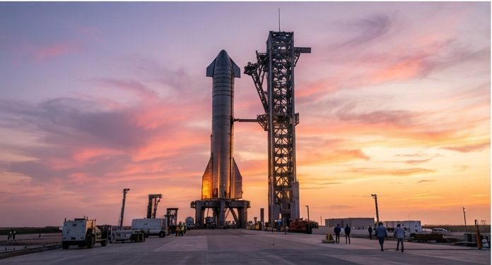

FULL STACK AT DUSK · AI RENDER
Starbase
Boca Chica · Texas · Gulf Coast
The first purpose-built Starship spaceport — factory, test site and launch complex in one, where the tower's arms are designed to catch returning boosters out of the sky.
Coordinates
25.997°N · 97.155°W
Vehicle
Starship / Super Heavy
Role
Build · Test · Launch
Status
Active flight test